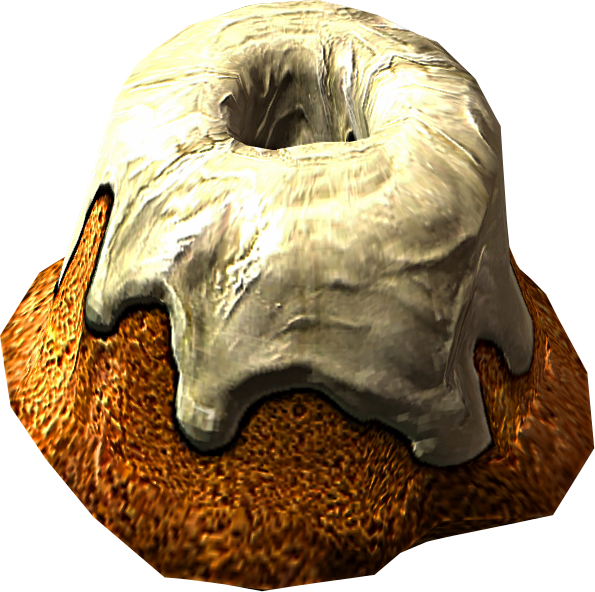

Sweetroll

Sometimes after slaying 15 dragons all you need is a sweet treat, this is the ultimate dessert Skyrim can offer
Ingredients
- 1 large bundt tin
- 2 cups plain flour
- 1 tsp baking powder
- ¾ cup of milk
- ¾ cup of water
- ½ cup of caster sugar
- 1 cup of maple syrup
- 3 eggs, beaten
- 60g butter, melted
- 1 vanilla pod, scraped
- 3 tsp cinnamon powder
- Glaze
- 1 cup melted butter
- 1 cup icing sugar
- 1 vanilla pod, scraped
Steps
- Preheat oven to 200°C/392°F
- Grease bundt tin
- Mix all the baking ingredients in a bowl
- Pour the batter into the bundt tin
- Bake for 45 minutes
- Flip the roll and cool it on a wire rack
- For the glaze, combine butter, sugar, and vanilla in a bowl and whip
- Drizzle the glaze over the top of the sweetroll